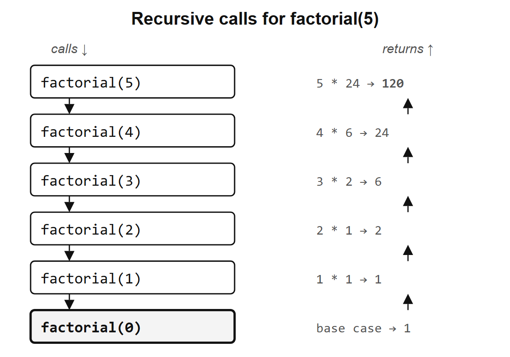

double <- function(x) x * 25 Your first function
So far, the functions you have called, including sqrt(), c(), and sum(), were written by someone else. You can write functions of your own and use them in the same way.
5.1 Anatomy of a function
Here is a function that doubles its input:
function(x) creates a function with one parameter, x. Its body, x * 2, tells R what to calculate when you call it. The assignment binds the name double to the function, just as x <- 3 binds the name x to a number. When you call double(5), the value 5 is the argument supplied to the parameter x.
Call it:
double(5)
#> [1] 10double(c(1, 2, 3))
#> [1] 2 4 6The second call works because * is vectorized (Section 4.4): x * 2 multiplies each element by two. A function’s body can also contain several expressions, enclosed in curly braces:
describe <- function(x) {
n <- length(x)
m <- mean(x)
paste("n =", n, ", mean =", round(m, 2))
}
describe(c(72, 85, 61, 90, 78))
#> [1] "n = 5 , mean = 77.2"R evaluates the expressions in order: it assigns the length of x to n, assigns the mean to m, and then combines them into a string. That string is the function’s return value. The rule is the same as in Section 3.3: a block in curly braces is itself an expression whose value comes from the last expression evaluated.
Exercises
- Write a function
squarethat takes a number and returns its square. - Write a function
to_celsiusthat converts a Fahrenheit temperature to Celsius (formula:(f - 32) * 5/9). Test it withto_celsius(212). - Does
to_celsius(c(32, 72, 212))work? Why?
5.2 Arguments and defaults
Functions can have multiple arguments, and some can have default values:
greet <- function(name, greeting = "Hello") {
paste(greeting, name)
}name is required; greeting is optional, defaulting to "Hello" if you leave it out:
greet("R")
#> [1] "Hello R"greet("R", "Hey")
#> [1] "Hey R"You can also pass arguments by name, in any order:
greet(greeting = "Bonjour", name = "R")
#> [1] "Bonjour R"Arguments match by position or name, just as they did in log(8, base = 2) in Section 3.4. You use the same calling syntax for your own functions and those supplied with R.
A function can also accept a variable number of arguments through ... (pronounced “dot-dot-dot”):
shout <- function(...) {
words <- c(...)
toupper(paste(words, collapse = " "))
}
shout("hello", "world")
#> [1] "HELLO WORLD"... collects every argument you pass, however many there are, and c(...) combines them into a vector. c(), paste(), and sum() all use ..., which is why c(1, 2, 3) and c(1, 2, 3, 4, 5, 6, 7) both work. More on ... in Chapter 23.
NoteOne argument at a time
In the lambda calculus, a function takes exactly one argument. If you want two, you write a function that returns another function:
λx. λy. x + yThis reads: “a function that takes x and returns another function that takes y and returns x + y.” To add 3 and 5, you apply it twice: (λx. λy. x + y)(3)(5) = (λy. 3 + y)(5) = 3 + 5 = 8. Each application replaces one argument, one step at a time. This is called currying, and R can do it too (Chapter 20). ... is the practical alternative: a single function accepts any number of arguments and decides what to do with them inside.
Exercises
- Write a function
powerwith argumentsxandn = 2that computesx^n. Test it withpower(3)andpower(3, 3). - What happens if you call
greet()with no arguments? Read the error message. - Rewrite
powerso the default exponent is 3. What doespower(2)return now?
5.3 Return values
R returns the value of the last expression evaluated in a function’s body:
add_one <- function(x) x + 1
add_one(10)
#> [1] 11The body contains one expression, x + 1, so its value becomes the result of the call. You can assign that result to a name or use it in another calculation:
answer <- add_one(10)
answer * 2
#> [1] 22
sqrt(add_one(8))
#> [1] 3In sqrt(add_one(8)), add_one(8) produces 9, which sqrt() uses to calculate 3. This follows the idea from Section 3.3: a function call is an expression, and its value can become part of a larger expression.
The same rule applies to a body with several expressions:
add_one <- function(x) {
result <- x + 1
result
}The assignment creates a local name, result. The final expression retrieves its value, which the function returns. You choose what comes back by choosing what the function evaluates last.
NoteThe lambda calculus connection
In the lambda calculus, applying a function replaces its parameter with the supplied argument. For this example,
\[ (\lambda x.\, x + 1)(10) \;\longrightarrow\; 10 + 1 \;\longrightarrow\; 11. \]
The first step is called beta reduction. It gives us a mathematical way to follow the calculation: substitute the argument, then evaluate the resulting expression.
R carries out the call through an evaluation environment where the parameter x is bound to the supplied argument. The body remains x + 1; evaluating x provides the value needed for the calculation. We will examine these environments and R’s lazy evaluation in later chapters.
You can also use return() to finish a function at a particular point. When R reaches it, the call ends immediately with the supplied value:
first_value <- function(x) {
if (length(x) == 0) {
return(NA)
}
x[1]
}
first_value(c(72, 85, 61))
#> [1] 72
first_value(numeric(0))
#> [1] NAFor an empty vector, return(NA) ends the call inside the if block. For a vector with elements, evaluation continues to x[1], whose value the function returns. This is an early return: it handles a case before execution reaches the end of the body.
TipOpinion
Use return() only for early exits like the one in first_value above. If the function runs to the end, let the last expression be the return value; writing return(x) on the last line adds nothing but noise.
One subtlety: assignment returns its value invisibly. When a function’s last line is an assignment, R returns the value but does not print it:
quiet <- function(x) {
result <- x + 1
}
quiet(5)Nothing printed. The function returned 6, but invisibly. If you want to see it:
(quiet(5))
#> [1] 6Or store it:
stored <- quiet(5)
stored
#> [1] 6The general rule: if you want your function to show a result, make sure the last expression is the value itself, not an assignment. But there is a deeper question lurking here: if a function is just a value, can you treat it the way you treat a number or a string?
Exercises
What does this function return? Predict, then check:
mystery <- function(x) { a <- x + 1 b <- a * 2 b } mystery(3)What about this one?
mystery2 <- function(x) { a <- x + 1 b <- a * 2 } mystery2(3)Write a function
clampthat takes a valuex, alo, and ahi, and returnsloifx < lo,hiifx > hi, andxotherwise. Usereturn()for the early exits.
5.4 Functions are just values
Type sqrt without parentheses and R prints the function itself. Functions are values: you can assign them to names, store them in lists, and inspect their types.
f <- double
f(5)
#> [1] 10
is.function(double)
#> [1] TRUE
typeof(double)
#> [1] "closure"double is a name bound to a function. The assignment f <- double binds a second name to that same function, just as y <- x in Section 3.2 bound a second name to the number 3. The type "closure" describes a function together with the environment in which it was created. We will look at what that environment does shortly.
You can also create a function and call it without assigning it a name:
(function(x) x + 1)(10)
#> [1] 11The expression function(x) x + 1 creates the function. The surrounding parentheses group that expression, and the following (10) calls the resulting function with the argument 10. A function used without a name is called an anonymous function. This example corresponds to applying λx. x + 1 to 10; in Chapter 19, we will pass anonymous functions to other functions.
Functions can also be returned as results. Together, these uses make functions first-class values: they can be stored, passed, and returned just like numbers or strings. When a function runs, its parameters and local variables need bindings of their own. Where are those bindings kept?
Exercises
- Assign
sqrtto a new names. Doess(16)work? - What does
is.function(42)return? What aboutis.function(is.function)? - Run
(function(a, b) a + b)(3, 4). What happens?
5.5 Scope: a first look
What happens to variables created inside a function?
add_ten <- function(x) {
y <- 10
x + y
}
add_ten(5)
#> [1] 15y was created inside add_ten. Can you access it from outside?
y
#> Error:
#> ! object 'y' not foundNo. Variables created inside a function live in the function’s own local environment and vanish when the function finishes. This is what makes functions safe: they do not leak their internal state into your workspace. But the boundary is not symmetric.
multiplier <- 3
scale <- function(x) {
x * multiplier
}
scale(10)
#> [1] 30When scale uses multiplier, R first looks for a local binding inside the running function. It then searches the environment where scale was defined and continues through enclosing environments until it finds the name. Here, it finds multiplier in the workspace. This lookup rule is called lexical scoping, which R inherited from Scheme (Section 2.2). What happens when a function assigns to a name that already exists in the workspace?
n <- 0
increment <- function() {
n <- n + 1
n
}
increment()
#> [1] 1
n
#> [1] 0increment created its own local n, set it to 1, and returned it, but the n in the workspace is still 0. The function read the outer n without modifying it; it created a new local binding with the same name. This is R’s copy-on-modify philosophy: values do not change, you create new values.
The practical rule is simple: what happens inside a function stays inside the function. The full machinery behind this (environments, closures, and the scope chain) is in Chapter 18.
Exercises
Predict the output, then run it:
x <- 100 f <- function() { x <- 1 x } f() xWhat does this return?
x <- 10 g <- function(x) { x + 1 } g(20)Is it 11 or 21? Why?
Can a function call another function you’ve defined? Try it: write
triple <- function(x) x * 3, then writetriple_and_add <- function(x) triple(x) + 1. Doestriple_and_add(5)work?
5.6 Guarding your inputs
What happens when someone passes the wrong type to your function?
to_celsius <- function(f) (f - 32) * 5/9
to_celsius("hot")
#> Error in `f - 32`:
#> ! non-numeric argument to binary operatorThe error says non-numeric argument to binary operator, which is technically accurate but unhelpful: you have to read the function body to figure out what went wrong. Better to catch the problem at the door:
to_celsius <- function(f) {
stopifnot(is.numeric(f))
(f - 32) * 5/9
}
to_celsius("hot")
#> Error in `to_celsius()`:
#> ! is.numeric(f) is not TRUEstopifnot() checks a condition and stops with an error if it is FALSE. The message now tells you exactly what failed: is.numeric(f) is not TRUE. You can stack multiple checks in the same call:
safe_divide <- function(x, y) {
stopifnot(is.numeric(x), is.numeric(y), y != 0)
x / y
}
safe_divide(10, 0)
#> Error in `safe_divide()`:
#> ! y != 0 is not TRUEA function that fails immediately with a clear message saves you from chasing wrong outputs later. Chapter 25 covers input validation in depth; for now, stopifnot() at the top of your functions is enough. But validation only protects against bad inputs. What about the structure of the computation itself?
Exercises
- Add a
stopifnot()to yourpowerfunction that checksxis numeric andnis numeric. - What happens if you write
stopifnot(is.numeric(x), length(x) == 1)and pass a vector? Try it.
5.7 Recursion
A function can call other functions. Can it call itself?
factorial <- function(n) {
if (n == 0) return(1)
n * factorial(n - 1)
}
factorial(5)
#> [1] 120factorial(5) calls factorial(4), which calls factorial(3), and so on, until factorial(0) returns 1. Each call waits for the next to return before completing its multiplication:
factorial(5)
= 5 * factorial(4)
= 5 * 4 * factorial(3)
= 5 * 4 * 3 * factorial(2)
= 5 * 4 * 3 * 2 * factorial(1)
= 5 * 4 * 3 * 2 * 1 * factorial(0)
= 5 * 4 * 3 * 2 * 1 * 1
= 120A function calling itself is called recursion. Each call has its own local environment and its own binding for n. The call with n = 5 waits for the result of the call with n = 4, which waits for the next. At n = 0, the function returns 1 directly. This is the base case, where the recursive calls stop. The waiting calls then finish their multiplications in reverse order, returning 1, 2, 6, 24, and finally 120.

factorial(5). Each call holds its own n and waits for the next call to return.
The expansion above lets us follow the calculation by replacing each call with the expression its body computes. Recursion also expresses repetition in the lambda calculus; we will explore that connection further when we reach fixed points.
NoteFactorial in lambda calculus
In lambda calculus notation, factorial looks like this:
fact = λn. if n = 0 then 1 else n * fact(n - 1)The self-reference is informal shorthand; pure lambda calculus has no names, so fact cannot refer to itself directly, and Section 30.5 shows how recursion works without them. The if/then/else is shorthand too. The lambda calculus has only variables, functions, and application, but Church showed that true, false, and branching can be encoded as functions that choose between their arguments:
TRUE = λx. λy. x # a function that takes two arguments and returns the first
FALSE = λx. λy. y # a function that takes two arguments and returns the second
IF = λcond. λthen. λelse. cond(then)(else)IF hands both options to the condition and lets it choose, so IF(TRUE)(1)(2) becomes TRUE(1)(2) becomes (λx. λy. x)(1)(2) becomes 1. Section 30.2 builds these in R.
With the shorthand in place, we can unfold the definition and substitute the argument, one step at a time:
fact(3) # apply fact with n = 3
= (λn. if n=0 then 1 else n * fact(n-1))(3) # replace fact with its definition
= if 3=0 then 1 else 3 * fact(3-1) # substitute n = 3
= 3 * fact(2) # 3≠0, so take the else branch
= 3 * 2 * fact(1) # same pattern: n=2, substitute, reduce
= 3 * 2 * 1 * fact(0) # n=1
= 3 * 2 * 1 * 1 # n=0, take the then branch: 1
= 6R’s function(n) is the same as λn, and this reduction is what R does when you call factorial(3): substitute 3 for n, evaluate the body, hit factorial(2), substitute again, keep going until the base case.
For factorial, each call makes one recursive call. The Fibonacci sequence gives us an example where each call makes two:
fibonacci <- function(n) {
if (n <= 1) return(n)
fibonacci(n - 1) + fibonacci(n - 2)
}
fibonacci(10)
#> [1] 55Each Fibonacci number is the sum of the preceding two, starting with 0 and 1. The function follows this definition directly. To calculate fibonacci(10), it calculates fibonacci(9) and fibonacci(8). Calculating fibonacci(9) requires another calculation of fibonacci(8), repeating all the work that call involves.
These repetitions multiply: fibonacci(8) is computed twice, fibonacci(7) three times, and fibonacci(6) five times. The number of calls grows exponentially with n, so even a modest increase in the input can make the calculation much slower.
We can calculate each value once by carrying the two most recent Fibonacci numbers forward as arguments:
fibonacci_fast <- function(n, a = 0, b = 1) {
if (n == 0) return(a)
fibonacci_fast(n - 1, b, a + b)
}
fibonacci_fast(10)
#> [1] 55
fibonacci_fast(50)
#> [1] 12586269025The naive version needs an exponential number of calls, so fibonacci(50) would not finish in any reasonable time. fibonacci_fast(50) returns immediately, because each call makes a single recursive call. Here is fibonacci_fast(4) expanded:
fibonacci_fast(4, 0, 1)
= fibonacci_fast(3, 1, 1) # n=4→3, a=0→1, b=1→0+1=1
= fibonacci_fast(2, 1, 2) # n=3→2, a=1→1, b=1→1+1=2
= fibonacci_fast(1, 2, 3) # n=2→1, a=1→2, b=2→1+2=3
= fibonacci_fast(0, 3, 5) # n=1→0, a=2→3, b=3→2+3=5
= 3 # n=0, return aEach call passes new values of n, a, and b to the next call, and no variable is modified along the way. Because the recursive call is the last thing the function does, this form is called tail recursion.
Many functions with several recursive calls can be rewritten as one call that carries extra arguments. For Fibonacci, the extra arguments hold the last two numbers. For a tree traversal, they might hold an accumulator list.
R does not turn tail calls into loops, so every call still counts toward the nesting limit set by options(expressions = ), which is 5000 by default. For most everyday R work, vectorized operations and functions like map() (Chapter 19) are better tools.
But there is something interesting about factorial that has nothing to do with performance: its base case and inductive step have the same shape as a proof by mathematical induction.
Exercises
- Trace
factorial(3)by hand, writing out each step as in the example above. - Write a recursive function
sum_tothat adds up all integers from 1 ton. Check:sum_to(100)should return 5050. - What happens if you call
factorial(-1)? Why? Add astopifnot()to guard against it.
5.8 Programs and proofs
Look at factorial again:
factorial <- function(n) {
if (n == 0) return(1)
n * factorial(n - 1)
}Two parts: a base case (when n = 0, return 1) and a recursive step (compute factorial(n - 1), then multiply by n). You can prove that this calculation gives the factorial by following the same structure. The base case returns the correct value, 0! = 1. For the inductive step, assume the recursive call correctly computes (n - 1)!. Multiplying by n then gives n!. Each call reduces a positive integer by one, so the calculation eventually reaches zero. Recursion and induction follow the same structure here.
In the 1930s, a logician studying how functions combine noticed a connection between types and formal logic. A function taking an A and returning a B had a type that could be read as the proposition “if A, then B.” His name was Haskell Curry, after whom the Haskell programming language is named. In 1969, William Howard made the connection precise for a formal system of typed functions: types correspond to propositions, and programs with those types correspond to proofs. This is the Curry–Howard correspondence. In systems that also express induction, a recursive program can construct a proof one case at a time.
Our R function gives us a concrete way to follow that reasoning. Working with mathematical integers, the base case supplies the factorial of zero, and the recursive step constructs each subsequent factorial from the preceding one. The correctness argument follows by induction. R itself executes the calculation; checking a formal proof requires a system that can express the claim and verify each step.
The transformation from double-recursive fibonacci to tail-recursive fibonacci_fast has a related connection to induction. We can track two consecutive Fibonacci numbers together: if we know F(k) and F(k + 1), addition gives F(k + 2), and we have the next pair. This strengthens the inductive statement to describe two consecutive values at each step. The extra arguments a and b carry those values through the computation. Each call advances the pair, reusing the work already done. That reuse is what makes this version fast.
Church, Curry, and Turing studied formal reasoning and computation before electronic computers existed. Their work helped establish precise connections between manipulating expressions, constructing proofs, and carrying out calculations.
Look at how the definition of factorial enters its correctness proof. For a positive integer n, unfolding the definition gives n * factorial(n - 1). At zero, it gives 1. These equations follow directly from the definition. To show that the function returns the factorial for every natural number, we use them in a proof by induction.
We can write the recursive definition using lambda notation, with the conditional and arithmetic left in familiar form:
fact = λx. if x = 0 then 1 else x * fact(x - 1)Here, λx introduces a function whose argument is x. The equation defines fact recursively: its name also appears in its body. Applying it to an arbitrary natural number n gives:
fact(n)
= (λx. if x = 0 then 1 else x * fact(x - 1))(n)
= if n = 0 then 1 else n * fact(n - 1)The first step unfolds the recursive definition. The second substitutes n for the argument x in the function body. This substitution is called beta reduction. For positive n, the conditional selects n * fact(n - 1). We have derived the relationship between the calculation at n and the calculation at n - 1.
Now state the claim we want to prove: for every natural number n, fact(n) terminates and returns n!. We reason here about mathematical integers and exact arithmetic. At zero, the expression returns 1, which equals 0!. For the inductive step, assume fact(k) terminates and returns k!. Unfolding fact(k + 1) gives (k + 1) * fact(k). By our assumption, the recursive call finishes and supplies k!; multiplication then gives (k + 1)!. Induction establishes the claim for every natural number.
The function definition supplies the equations, and the inductive hypothesis lets us use the result for the smaller argument. Together they explain why the computation works. For each particular input, evaluation follows a finite sequence of reductions. The induction proof establishes correctness for all natural-number inputs at once.
The Curry–Howard correspondence makes a further connection precise in suitable formal systems: a proposition can be expressed as a type, and a proof can be written as a program inhabiting that type. A proof by induction can itself be a recursive function, constructing evidence for each case from evidence for the preceding one. Our factorial argument shows the structure such a proof would follow.
NoteProof assistants
The correspondence is the foundation of formal verification: software that proves other software is correct. The first practical tool built on it was Coq, developed at INRIA in the late 1980s. In Coq, every program must come with a machine-checkable proof that it does what its type signature claims; if the proof has a gap, the code does not compile. This makes Coq painful for ordinary programming but powerful for building software where correctness matters more than convenience.
In 2013, Leonardo de Moura at Microsoft Research started Lean, a newer proof assistant with a more accessible syntax and a growing library of formalized mathematics called Mathlib. In Lean, a proof that adding zero to any natural number gives back the same number looks like this:
theorem add_zero (n : Nat) : n + 0 = n := by
induction n with
| zero => rfl
| succ n ih => simp [Nat.add_succ, ih]The structure is identical to factorial: a base case (zero), an inductive step (succ n), and the result from the smaller case (ih, the induction hypothesis). If the proof is wrong, the code does not compile. The proof is a program, and the program is a proof.
The seL4 microkernel (used in military helicopters and autonomous vehicles) has a machine-checked proof that certain classes of errors in its code cannot occur, for any input. Not “we haven’t found a bug yet”: a mathematical guarantee, verified by a computer. The CompCert C compiler has a similar proof that it will never miscompile your code. Both proofs were written as programs in Coq. Traditional testing covers a finite set of inputs; a proof by induction, because it operates on the structure of the program rather than on specific values, covers all of them.
R lets you write recursive functions freely, including ones that call themselves forever. When a function has a base case and each recursive call moves toward it, you can use that structure to prove a property by induction: establish the property at the base case, then show that it holds at each step whenever it holds for the smaller case.